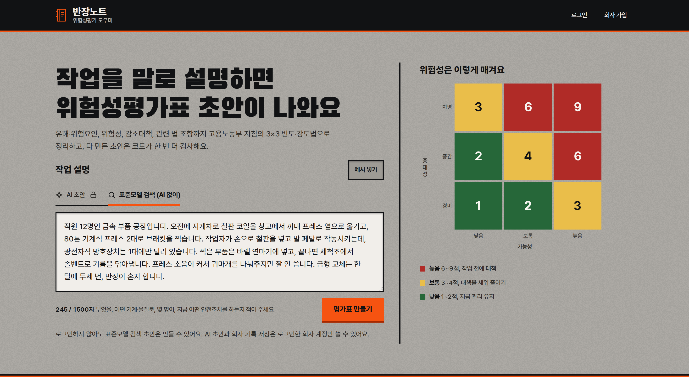

매일 작업 전 점검
감소대책이 작업 전 체크리스트가 되고, 기록은 날짜별·한 달 CSV로 남는다. 자주 못 하는 대책(최근 10번 중 3번 이상)은 알려 평가표를 고치게 한다.
안전 담당자가 없는 50인 미만 공장의 반장·사업주가 하는 일을 평소 말투로 적으면, 유해·위험요인, 위험성, 감소대책, 관련 법 조항까지 정리한 초안이 나옵니다.
AI가 쓰고, 코드가 검증한다

작은 사업장일수록 사고는 많고, 평가를 할 사람은 없다
산재 사망의 약 80%가 50인 미만 사업장에서
뉴시스, 2025-08-01
50인 미만 기업 3곳 중 1곳은 위험성평가를 하지 않는다. 이유는 전문인력 부족 등
한국경영자총협회 조사 (이투데이, 2023-03-21)
50인 미만 중소기업 중 중대재해처벌법 대응 준비가 안 된 곳
중소기업중앙회 조사 (뉴시스, 2023-12-18)
2024년 외국인 근로자 산재 사망 (2022년 85명)
고용노동부 자료 (MTN, 2026-09-17)
공공 데이터는 무료, AI는 평가표 1건에 약 3센트
설비·물질·인원·지금의 안전조치를 평소 말투로
공공 표준모델에서 비슷한 작업의 위험요인·법 조항을 찾아 AI에게 건넨다
KRAS 양식, 3×3 빈도·강도법. 1건 16~29초. 안 되면 무료 모델·검색 초안으로
검사를 통과한 표만 인쇄. 대책은 작업 전 체크리스트로 매일 확인
지금
대책을 하면
위험성 높음 13개가 대책 후 0개로
높음 6~9 작업 전 대책 보통 3~4 줄이기 낮음 1~2 유지
코드 검사기가 다시 본다. 오류는 AI에게 한 번 고쳐 쓰게 하고, 사람이 볼 것은 ‘확인 필요’로 표시한다.
표준모델 작업 20종, 정답 위험요인 359개. 사람이 하나씩 판정
판정 기준 대상과 원인까지 같아야 같은 위험. 확실하지 않으면 틀림, 설명에 없는 설비를 지어낸 항목도 틀림. 정답 파일은 검색에서 빼서 ‘처음 보는 작업’으로 쟀다.
감소대책이 작업 전 체크리스트가 되고, 기록은 날짜별·한 달 CSV로 남는다. 자주 못 하는 대책(최근 10번 중 3번 이상)은 알려 평가표를 고치게 한다.
안전보건공단 사례 2,573건에서 평가표 항목과 비슷한 사고를 최대 3건 보여 준다. 예: 그라인더 숫돌 파편, 철판 코일 낙하
위험성 높은 6줄을 코드가 쉬운 한국어로 정리하고 AI는 번역만. 번역문을 다시 한국어로 옮겨 원문과 비교해, 뜻이 바뀐 줄은 막는다.
| 원문 (크메르어로 옮긴 줄) | 다시 한국어로 옮긴 뜻 |
|---|---|
| 튀김 등 식재료 자연발화로 화재 | 음식이 덜 익어 생고기처럼 화재 |
| 높은 곳 물건을 꺼내다 맞음 | 무거운 것을 높은 곳에 넣어 타박상 |
시험: 베트남어 6줄 중 4줄, 크메르어 6줄 중 1줄 통과. 언어 7개(베트남·크메르·네팔·인도네시아·미얀마·우즈베크·영어)